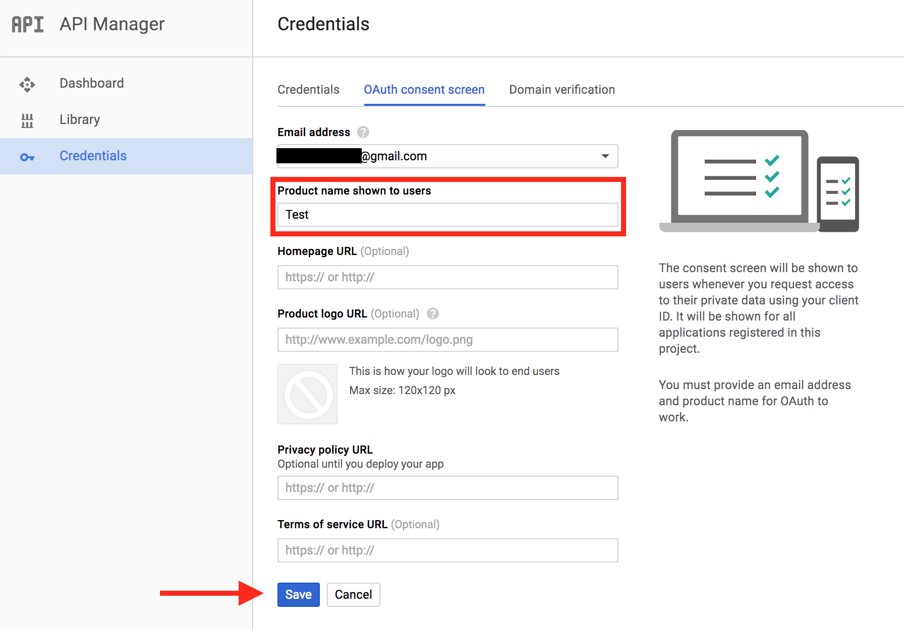
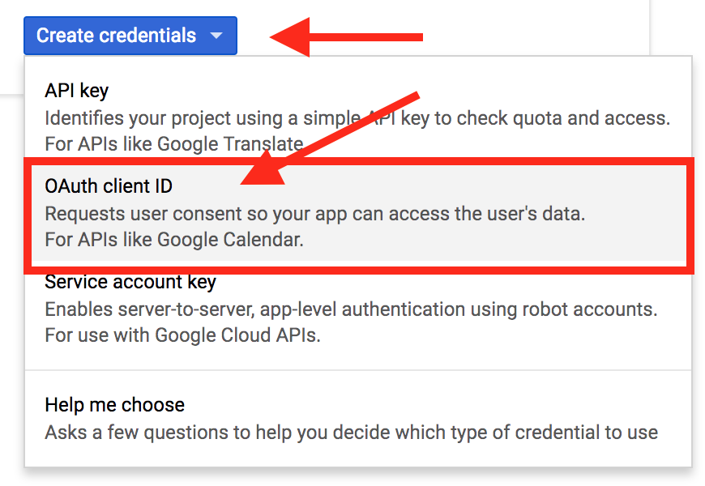
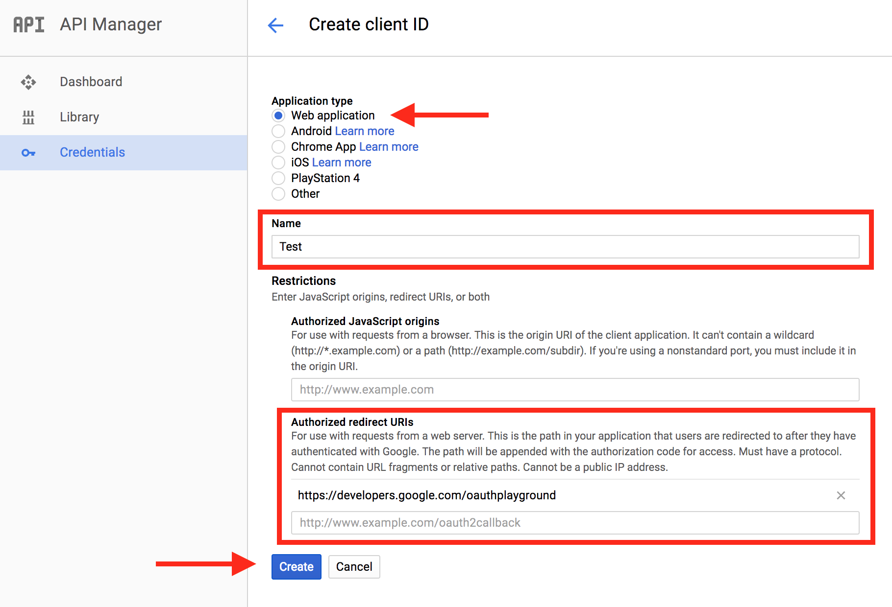
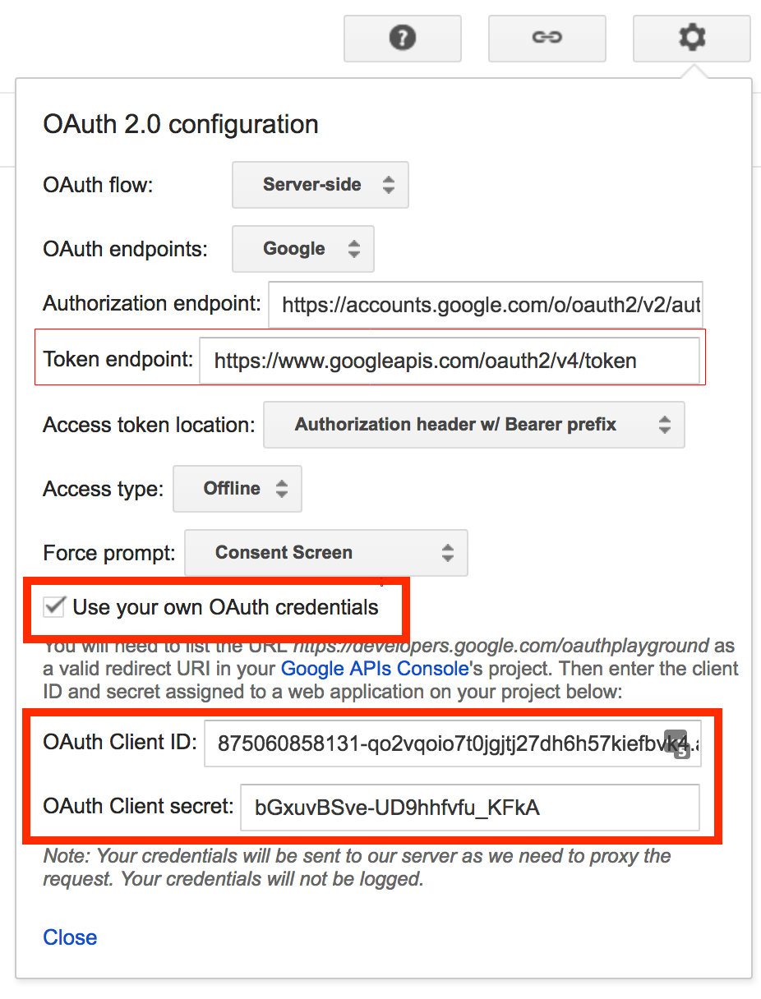
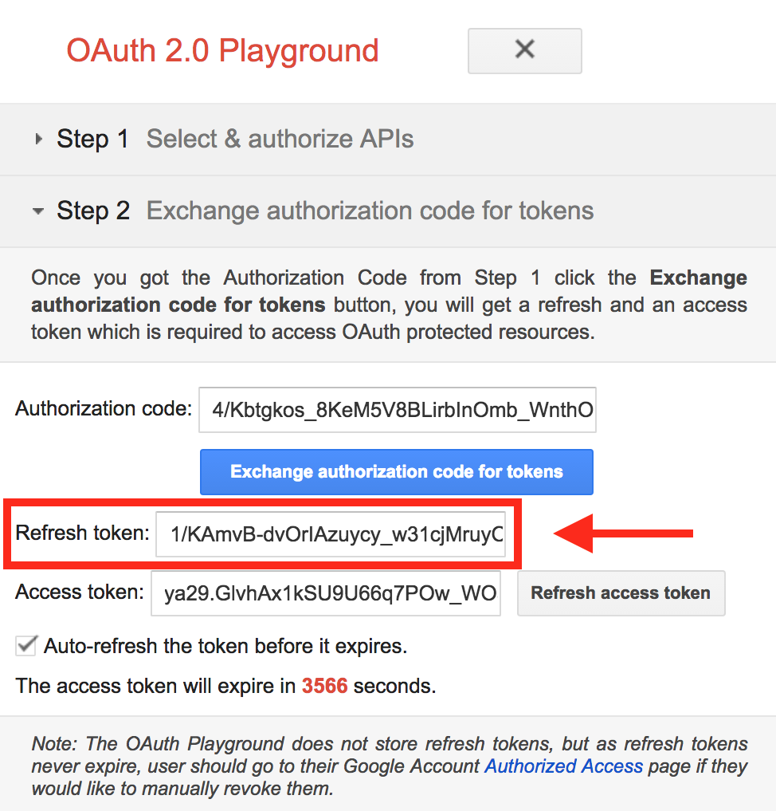

Transcripts (Automated by Google Speech)
Using this requires you to turn on an Opencast plugin. Take a look at the plugin management documentation to find out how you can do that.
Overview
The GoogleSpeechTranscriptionService invokes the Google Speech-to-Text service via REST API to transcribe audio to text.
During the execution of an Opencast workflow, an audio file is extracted from one of the presenter videos and sent to the Google Speech-to-Text service. When the results are received, they are converted to the desired caption format and attached to the media package.
Note that because Google's Speech-to-Text service can take a while to process a recording, we do not wait for it to finish before proceeding with the rest of Opencast's normal processing, the transcription process is asynchronous.
- Workflow 1 runs:
- Audio file is created
- Google Speech-to-Text job is started
- Workflow finishes
Translation finishes, workflow 2 is started.
- Workflow 2 runs:
- File with results is converted and attached to media package
- Media package is republished with captions/transcripts
Google Speech-to-Text service documentation, including which languages are currently supported, can be found here.
Configuration
Notes: Instructions and screenshots provided in this section are based on Google Speech-to-Text documentation at the time of writing this document. For up to date instructions please search for 'google speech to text configuration' or visit Google Cloud service page.
Step 1: Activate Google Speech and Google Cloud Storage APIs
- Log in to your Google account and Activate a 12 months free trial Google Cloud Platform services
- Create a Project to store your credentials and billing information
- Click Select a project to create new project or use existing project
- Enable Google Speech API
- Expand the menu on the left
- Go to APIs & Service > Libraries
- Find the Cloud Speech API and click Enable to enable the Google Cloud Speech API
- Enable Google Cloud Storage and Google Cloud Storage JSON API
- Go to APIs & Service > Libraries
- Find Google Cloud Storage and Google Cloud Storage JSON API and enable them if there are not.
- Create a cloud storage bucket. This is where you will temporary host the files you want to transcribe
- Go to your Google Cloud Dashboard
- Expand the menu on the left
- Go to Storage > Browser
- Click CREATE BUCKET to create a bucket for the selected project
Step 2: Get Google Cloud credentials
- Go to your Google Cloud Dashboard
- Expand the menu on the left
- Go to APIs & Service > Credentials
- Click on the tab OAuth Consent Screen
- Fill in a Project name and Save it. Don't worry about the other fields.

- Go back to Credentials
- Click the button that says Create Credentials
- select OAuth Client ID

- Choose Web Application and give it a name.
- Add https://developers.google.com/oauthplayground in Authorized redirect URIs. You will need to use this in the next step to get your refresh token
- Click Create and take note of your Client ID and Client Secret

Getting your Refresh Token and Authorization endpoint
- Go to https://developers.google.com/oauthplayground (Make sure you added this URL to your Authorized redirect URIs in the previous step.)
- In the top right corner, click the settings icon
- Take note of your Token endpoint. It is the token endpoint URL needed for the configuration.
- Make sure the Access token location is set to Authorization header w/ Bearer prefix
- Make sure Access type is set to Offline
- Make sure Force prompt is set to 'Consent Screen'
- Check Use your own OAuth credentials
- Paste your Client ID and Client Secret created previously.
- Close the settings.

- Select the scope of your APIs
- Click
Step 1 Select & authorize APIstab on the left - Find Cloud Speech API v1 and click on https://www.googleapis.com/auth/cloud-platform to select it.
- Find Cloud Storage API v1 from the list, expand it and click on https://www.googleapis.com/auth/devstorage.full_control to select it
- Find Cloud Storage JSON API v1 expand it and select https://www.googleapis.com/auth/devstorage.full_control
- Click Authorize APIs, allow access to your account when prompted. There will be a few warning prompts, just proceed. (On some browser you may need to click the advanced option before you can proceed to next page)
- Click
- When you get to
step 2 Exchange authorization code for tokenstab, click Exchange authorization code for tokens.

- You will need the OAuth Client ID, OAuth Client secret ,the Refresh token and Token endpoint for the configuration file
Step 3: Configure GoogleSpeechTranscriptionService
Edit etc/org.opencastproject.transcription.googlespeech.GoogleSpeechTranscriptionService.cfg:
- Set enabled=true
- Use OAuth Client ID, OAuth Client secret, Refresh token, Token endpoint and storage bucket created above to respectively set google.cloud.client.id , google.cloud.client.secret , google.cloud.refresh.token , google.cloud.token.endpoint.url and google.cloud.storage.bucket
- Enter the appropriate language in google.speech.language, default is (en-US). List of supported language: https://cloud.google.com/speech-to-text/docs/languages
- Remove profanity (bad language) from transcription by using google.speech.profanity.filter, default is (false), not removed by default
- Set the transcription model using google.speech.transcription.model, default is (default). List of models: https://cloud.google.com/speech-to-text/docs/transcription-model
- Enable punctuation for transcription result by setting google.speech.transcription.punctuation, to (true) default is (false)
- In workflow, enter the workflow definition id of the workflow to be used to attach the generated transcripts/captions
- Enter a notification.email to get job failure notifications. If not entered, the email in etc/custom.properties (org.opencastproject.admin.email) will be used. If no email address specified in either notification.email or org.opencastproject.admin.email, email notifications will be disabled.
Example of configuration file:
# Change enabled to true to enable this service.
enabled=false
# Google Cloud Service details
google.cloud.client.id=<OAUTH_CLIENT_ID>
google.cloud.client.secret=<OAUTH_CLIENT_SECRET>
google.cloud.refresh.token=1<REFRESH_TOKEN>
google.cloud.token.endpoint.url=<TOKEN_ENDPOINT>
# google cloud storage bucket
google.cloud.storage.bucket=<BUCKET_NAME>
# Language of the supplied audio. See the Google Speech-to-Text service documentation
# for available languages. If empty, the default will be used ("en-US").
google.speech.language=
# Filter out profanities from result. Default is false
google.speech.profanity.filter=false
# Enable punctuations for transcription. Default is false
google.speech.transcription.punctuation=true
# Transcription model to use
# If empty, the "default" model will be used
google.speech.transcription.model=default
# Workflow to be executed when results are ready to be attached to media package.
workflow=google-speech-attach-transcripts
# Interval the workflow dispatcher runs to start workflows to attach transcripts to the media package
# after the transcription job is completed.
# (in seconds) Default is 1 minute.
workflow.dispatch.interval=60
# How long it should wait to check jobs after their start date + track duration has passed.
# The default is 5 minutes.
# (in seconds)
completion.check.buffer=300
# How long to wait after a transcription is supposed to finish before marking the job as
# cancelled in the database. Default is 5 hours.
# (in seconds)
max.processing.time=18000
# How long to keep result files in the working file repository in days.
# The default is 7 days.
cleanup.results.days=7
# Email to send notifications of errors. If not entered, the value from
# org.opencastproject.admin.email in custom.properties will be used.
notification.email=localadmin@domain
Step 4: Add encoding profile for extracting audio
The Google Speech-to-Text service has limitations on audio types. Supported audio type are here. By default Opencast will use the encoding settings in etc/encoding/googlespeech-audio.properties.
Step 5: Add workflow operations and create new workflow
Add the following operations to your workflow. We suggest adding them after the media package is published so that users can watch videos without having to wait for the transcription to finish, but it depends on your use case. The only requirement is to take a snapshot of the media package so that the second workflow can retrieve it from the archive to attach the caption/transcripts.
<!-- Encode audio to flac -->
<operation
id="encode"
fail-on-error="true"
exception-handler-workflow="partial-error"
description="Extract audio for transcript generation">
<configurations>
<configuration key="source-flavor">*/source</configuration>
<configuration key="target-flavor">audio/flac</configuration>
<configuration key="target-tags">transcript</configuration>
<configuration key="encoding-profile">audio-flac</configuration>
<configuration key="process-first-match-only">true</configuration>
</configurations>
</operation>
<!-- Start Google Speech transcription job -->
<operation
id="google-speech-start-transcription"
fail-on-error="true"
exception-handler-workflow="partial-error"
description="Start Google Speech transcription job">
<configurations>
<!-- Skip this operation if flavor already exists. Used for cases when mediapackage already has captions. -->
<configuration key="skip-if-flavor-exists">captions/timedtext</configuration>
<configuration key="language-code">en-US</configuration>
<!-- Audio to be translated, produced in the previous compose operation -->
<configuration key="source-tag">transcript</configuration>
</configurations>
</operation>
Step 6: Create a workflow that will add the generated caption/transcript to the media package and republish it
A sample one can be found in etc/workflows/google-speech-attach-transcripts.xml
<!-- Attach caption/transcript -->
<operation id="google-speech-attach-transcription"
fail-on-error="true"
exception-handler-workflow="partial-error"
description="Attach captions/transcription">
<configurations>
<!-- This is filled out by the transcription service when starting this workflow -->
<configuration key="transcription-job-id">${transcriptionJobId}</configuration>
<configuration key="line-size">80</configuration>
<configuration key="target-flavor">captions/timedtext</configuration>
<configuration key="target-tag">archive</configuration>
<configuration key="target-caption-format">vtt</configuration>
</configurations>
</operation>
<!-- Publish to engage player -->
<operation id="publish-engage"
fail-on-error="true"
exception-handler-workflow="partial-error"
description="Distribute and publish to engage server">
<configurations>
<configuration key="download-source-flavors">dublincore/*,security/*,captions/*</configuration>
<configuration key="strategy">merge</configuration>
<configuration key="check-availability">false</configuration>
</configurations>
</operation>
<!-- Publish to oaipmh -->
<operation
id="republish-oaipmh"
exception-handler-workflow="partial-error"
description="Update recording metadata in default OAI-PMH repository">
<configurations>
<configuration key="source-flavors">dublincore/*,security/*,captions/*</configuration>
<configuration key="repository">default</configuration>
</configurations>
</operation>
Transcription delay before cancellation
If an event is deleted before the end of Google transcription process, or the Google Speech to Text API has some issues, or
something unexpected happens, the transcription process for the event will not be immediately cancelled.
Instead, transcription will be attempted several times based on the video duration and configuration properties: completion.check.buffer and max.processing.time.
Video duration + completion.check.buffer + max.processing.time set the duration before a
Google transcription job is cancelled.
completion.check.buffer 5 minutes by default
completion.check.buffer 5 hours by default.
All these values can be changed in Google Transcription properties file: etc/org.opencastproject.transcription.googlespeech.GoogleSpeechTranscriptionService.cfg
For example, if you have a 30 min video, using the default values, it will take 5 hours and 35 min before the transcription is cancelled (when something goes wrong).